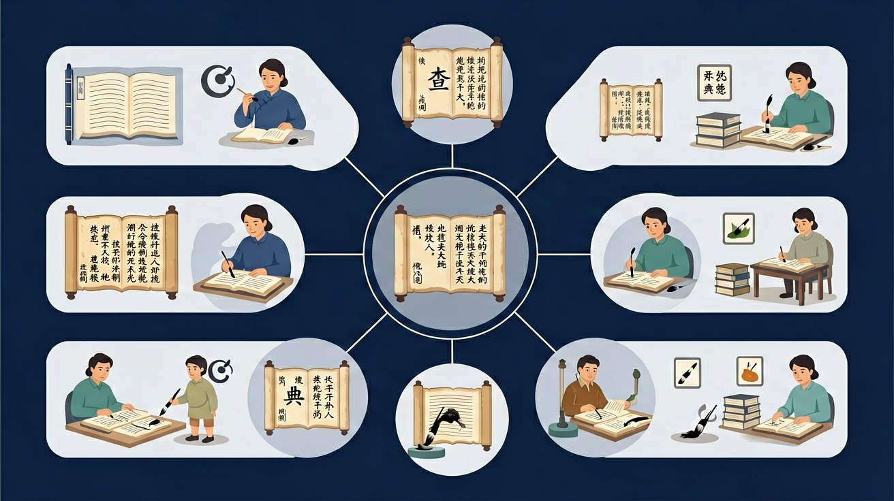

🤖 AI 多模态互动区
把你的问题告诉 AI，或上传图片让 AI 帮你分析
请用图片展示你在查字典，或上传一张汉字图片，让AI帮你分析应该用哪种方法查它
点击复制此提示词 →
📎
点击或拖拽图片到这里

二年级语文 · 掌握三种查字典方法
学完这节课，你能做到↓
你已经认识哪些查字方法？点击选择
拼音查字法
部首查字法
笔画查字法
我都不知道
知道读音，用拼音查！
知道读音用拼音，
先找声母再韵母，
在音节表里找一找，
翻到页码字就在！
第一步：输入拼音 píng
🎉 找到了！苹果的"苹"，读 píng，是草字头！
认识偏旁，按部首查！
点击正确的部首：
除部首外还有几画？
✅ 氵是部首，剩余8画，找到"清"！
数笔画，查难认的字！
"王"字有几画？选择后查找！
连闯5题，满分通关！
第 1 / 5 题
总得分
继续探索，成为查字典小达人！
🎊 恭喜！你已掌握查字典的三种方法！
你已经学会了拼音，认识了不少汉字
遇到不认识的字，不知道怎么查字典
今天我们学习三种查字典方法：拼音查字法、部首查字法、笔画查字法
测一测，帮助我们了解你的基础（不计入成绩）
题1：查字典时，如果知道一个字的读音，最方便的方法是？
题2：查字典时，如果不知道读音也不认识偏旁，应该用哪种方法？
💡 无论答对答错，继续学习都会有收获！
和前测对比，看看你进步了多少！
题1：「虹」字，你不认识它，也不确定偏旁，你会用哪种方法查字典？
题2：用部首查字法查「清」，它的部首是？
💡 类比记忆：把今天的知识和你已经知道的事物联系起来，记得更牢！
❌ 常见错误
查「清」字时，认为部首是「青」
✅ 正确做法
「清」的部首是「氵」（三点水），左边偏旁才是部首。查字典的关键是正确找出部首
🩺 错因诊断：找部首的方法：先看左边（左偏旁），再看上边（上部），最后看外框。「清」有左偏旁「氵」，所以部首是「氵」
把你的问题告诉 AI，或上传图片让 AI 帮你分析
点击或拖拽图片到这里
回忆：今天学了哪些关键词和规则？试着说出来。
用自己的话解释今天学的核心概念，不看书能说清楚吗？
用今天的知识解决一个实际问题，或写一个新例子。
把今天的知识与已有知识联系起来：有什么共同点？有什么区别？能不能自己创造一道新题？
先独立作答，再点选项查看对错与错因。
使用部首查字法时，首先要确定生字的什么？
如果生字的部首不明显，我们应该怎么办？
在《现代汉语词典》中，查找'好'字时，它的部首是什么？
查字典时，如果知道生字的读音，可以使用____查字法。
答案：拼音
拼音查字法是根据生字的拼音来查找
在部首查字法中，找到部首后，还需要根据____数查找生字。
答案：笔画
确定部首后，需要根据剩余部分的笔画数查找生字
关于查字典的方法，以下哪种说法是正确的？
选择几个不认识的字，尝试使用部首查字法和拼音查字法查找它们的读音和意思
❓ 为什么查字典时拼音查不到字？
❓ 部首查字法怎么确定字的部首？
❓ 遇到不认识的字怎么用笔画查？
学完这一课，这些问题你都能自信地回答。
🎯 能说出拼音查字法的3个步骤
🎯 能判断常见字的正确部首
🎯 能分析生字的笔画顺序并查字
字典=拼音目录+部首目录+检字表+正文
查字典像寻宝：线索（拼音/部首/笔画）→藏宝图（目录）→宝物（字义）
拼音查字快但需识字音，部首查字准但需知结构，笔画查字慢但能查生字
观察字典页码颜色标记，部首目录用绿色，拼音目录用黄色
查快递单号=查字典：输入信息→系统检索→找到包裹
✅ 记常见部首表：亻、氵、艹等
💡 混淆偏旁与部首概念
✅ 学基本笔顺规则：先横后竖，先撇后捺
💡 笔顺书写不规范
口诀：拼音部首笔画三招鲜，生字生词统统现原形
类比：查字典像手机导航：输入目的地（查字法）→规划路线（翻目录）→到达地点（找到字）
And：学生已经知道字典按拼音排序
But：但遇到不会读的字怎么办？
Therefore：学会用部首查字典很重要
部首是汉字的‘偏旁’，像‘氵’‘木’都是常见部首。比如查‘河’字：1.先找‘氵’部在字典目录第23页 2.再数右边‘可’有5画 3.翻到对应页码就能找到啦！每个字都有它的‘部首身份证’哦。
🌍 就像超市货架分区域：玩具区、零食区。‘氵’部的字都和水有关（河、海），‘饣’部的字都和食物有关（饭、饼），按部首找字超方便！
查‘苹’字第一步该做什么？